Movimientos
Los movimientos transforman una figura en otra. La figura puede cambiar de posición, pero mantiene su forma y su tamaño.
Los principales movimientos son:
Traslación
Consiste en desplazar una figura de un lugar a otro.
La figura no gira ni cambia de tamaño.
Por ejemplo, podemos mover un triángulo 4 unidades hacia la derecha y 2 hacia arriba.
Giro (o rotación)
Consiste en hacer girar una figura alrededor de un punto, llamado centro de giro.
Para describir un giro necesitamos conocer:
- Centro de giro.
- Ángulo de giro.
- Sentido del giro.
Por ejemplo: girar una figura 90° alrededor de un punto.
Simetría (o reflexión)
Una simetría produce una figura que parece el reflejo de la original.
En una simetría axial, existe una recta llamada eje de simetría.
Los puntos de la figura y sus imágenes están a la misma distancia del eje.
Idea clave: traslaciones, giros y simetrías conservan las longitudes y los ángulos de la figura.
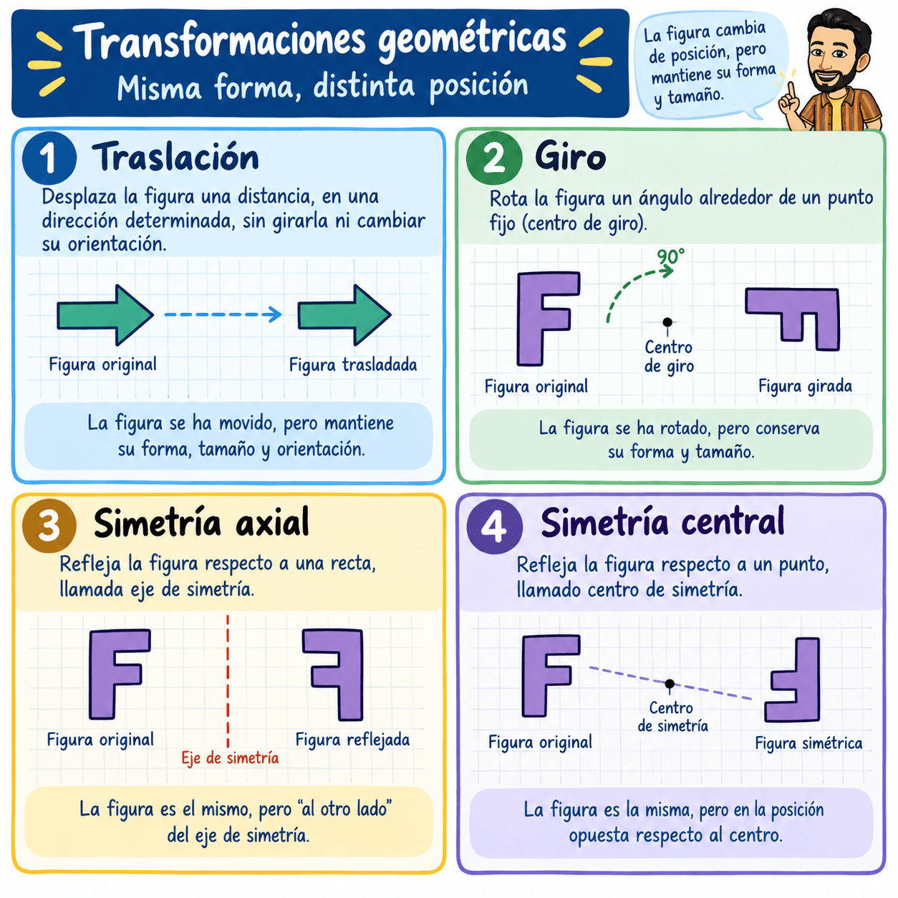
Frisos y mosaicos
Friso:
Un friso es un dibujo o conjunto de figuras que se repite de forma ordenada a lo largo de una banda. Para construirlo podemos utilizar movimientos como la traslación, el giro, la simetría o la simetría deslizante. Estos movimientos permiten repetir un mismo motivo sin cambiar su forma.
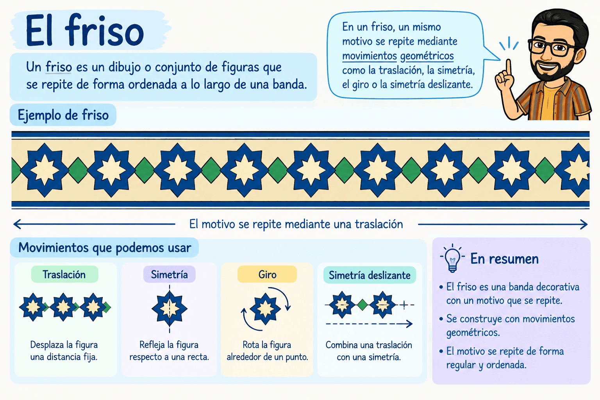
Mosaico:
Un mosaico es un conjunto de figuras que recubre una superficie (un plano, "algo" en 2D) sin dejar huecos ni superponer piezas. El motivo mínimo de recubrimiento es la figura o pequeño grupo de figuras que, al repetirse mediante movimientos, permite construir todo el mosaico.
En un mosaico aparece un ritmo, que es la forma ordenada en la que se repiten los motivos. Podemos conseguir diferentes ritmos utilizando traslaciones, giros y simetrías. Por ejemplo, una figura puede repetirse desplazándola siempre la misma distancia o girándola alrededor de un punto.
Los mosaicos en el arte andaluz
Los mosaicos y las formas geométricas tienen una gran importancia en el arte andaluz, especialmente en el arte hispanomusulmán. Podemos encontrarlos en edificios como la Alhambra de Granada, donde aparecen composiciones de estrellas, polígonos, simetrías y repeticiones.
Estas decoraciones nos permiten comprobar que las Matemáticas no solo sirven para hacer cálculos: también están presentes en el arte, la arquitectura y el diseño. Los movimientos geométricos ayudan a crear decoraciones ordenadas, equilibradas y visualmente atractivas.
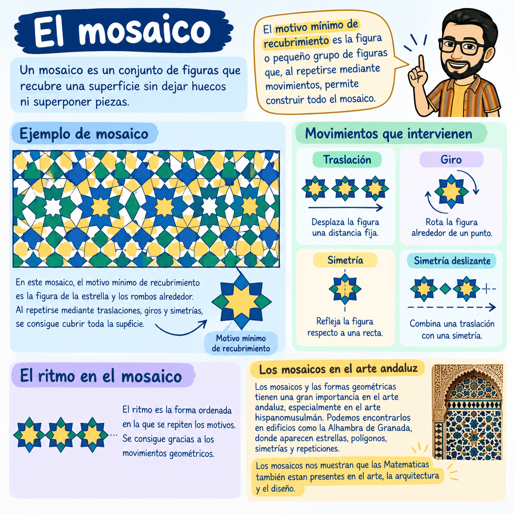
|
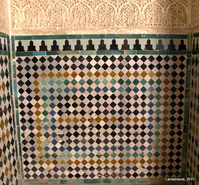 |
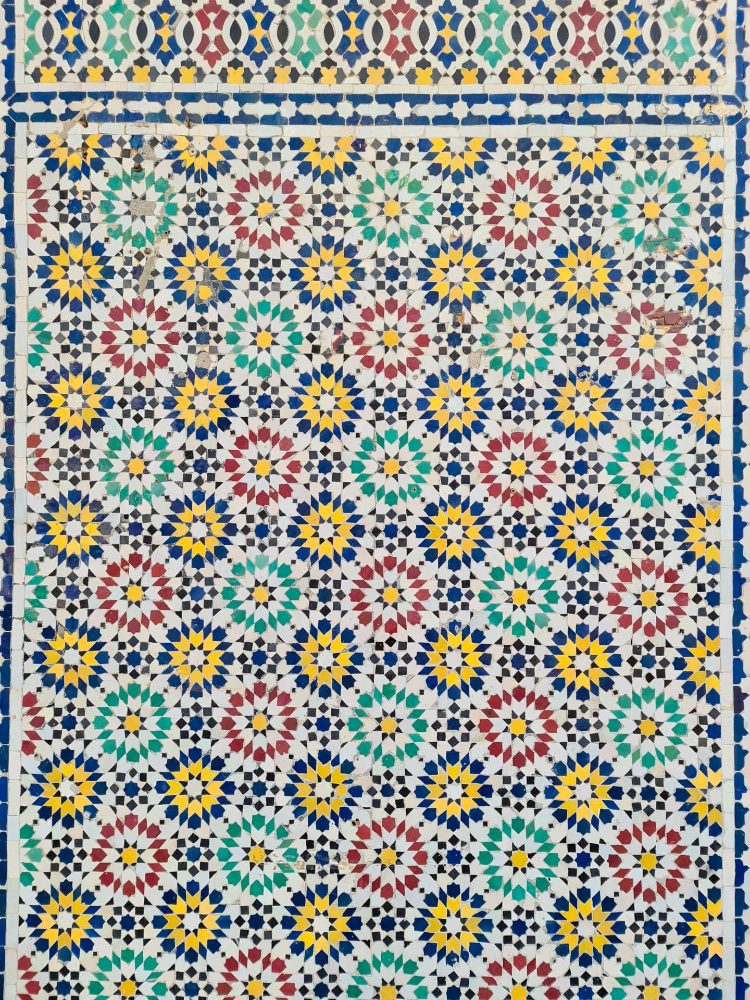 |
|
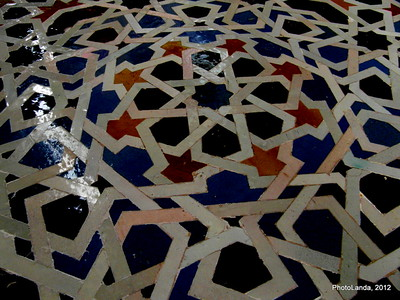 |
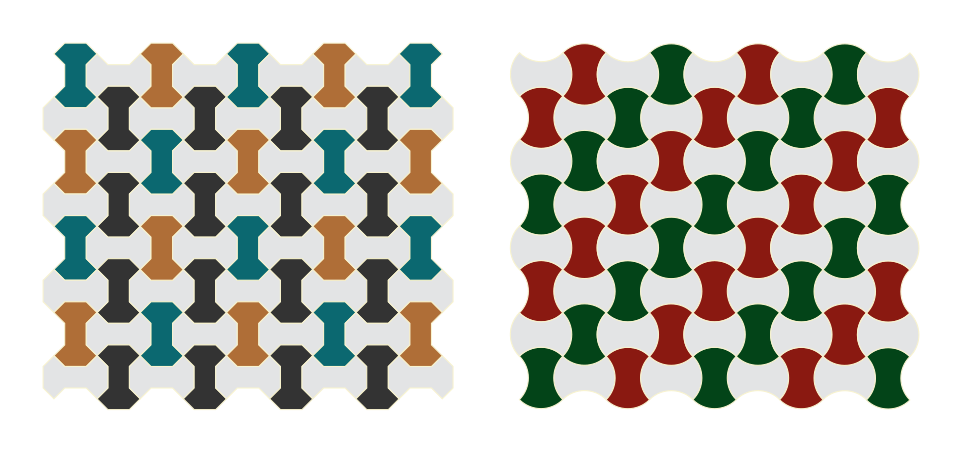 |
Semejanza
Dos figuras son semejantes cuando tienen la misma forma, aunque pueden tener distinto tamaño.
Sus ángulos correspondientes son iguales y sus lados correspondientes son proporcionales.
La relación entre las medidas correspondientes se llama razón de semejanza:
\(k=\dfrac{\text{longitud en la figura nueva}} {\text{longitud en la figura original}}\)
Por ejemplo, si un lado mide 4 cm en una figura y 8 cm en otra:
\(k=\dfrac84=2\)
La segunda figura es el doble de grande en sus longitudes.
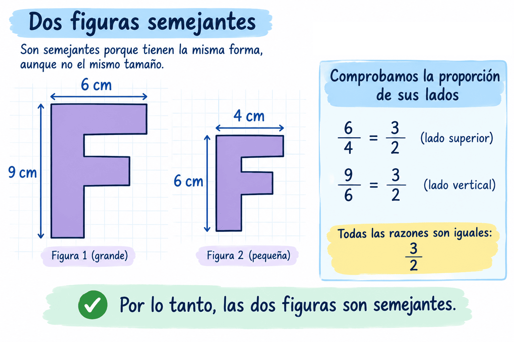
Importante
Si las longitudes se multiplican por \(k\):
- Los perímetros se multiplican por \(k\).
- Las áreas se multiplican por \(k^2\).
Teorema de Tales
El teorema de Tales permite trabajar con segmentos proporcionales cuando varias rectas paralelas cortan a otras rectas.
Su idea fundamental es:
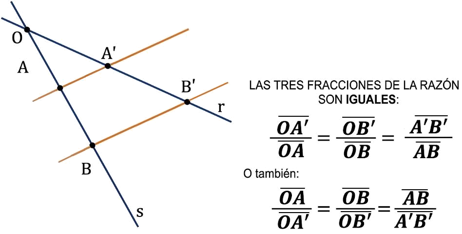
Las rectas paralelas forman segmentos proporcionales.
Por ejemplo, si dos triángulos son semejantes, podemos establecer proporciones entre sus lados, y con esto permite calcular una longitud desconocida.
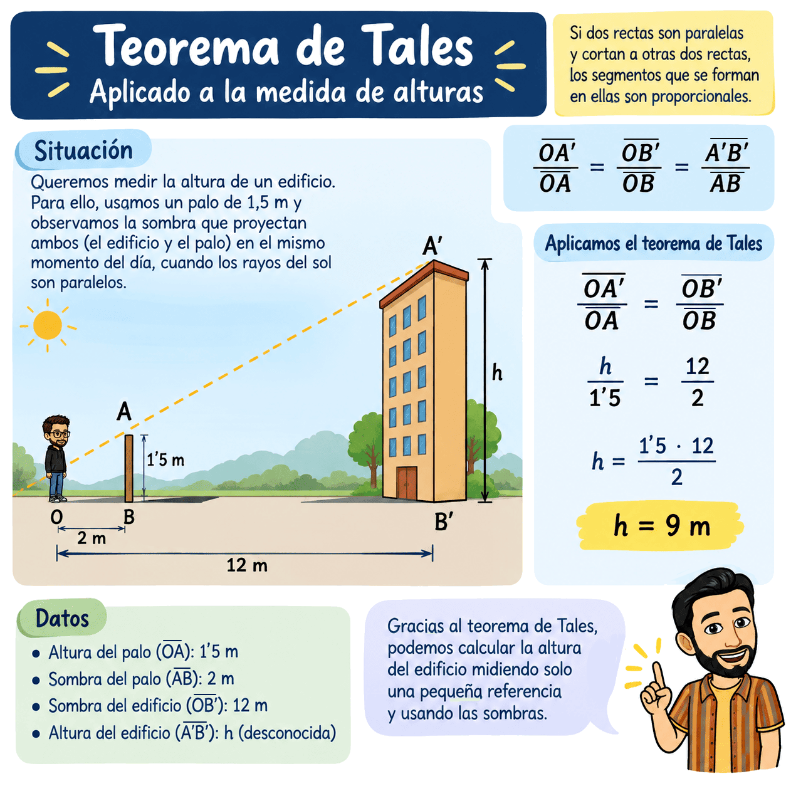
Pasos para resolver problemas de Tales:
- Identificar las rectas paralelas.
- Identificar los segmentos correspondientes.
- Escribir una proporción.
- Sustituir los datos.
- Resolver la proporción.
- Comprobar el resultado.
El teorema de Tales aparece en situaciones reales como calcular alturas o distancias difíciles de medir directamente.
Semejanza de triángulos
Dos triángulos son semejantes cuando tienen la misma forma, aunque uno puede ser más grande o más pequeño que el otro.
Para que dos triángulos sean semejantes:
- Sus ángulos correspondientes son iguales.
- Sus lados correspondientes son proporcionales.
Por ejemplo:
- Triángulo 1: lados 3, 4 y 5 cm.
- Triángulo 2: lados 6, 8 y 10 cm.
El segundo triángulo es el doble de grande:
\(\dfrac{6}{3}=\dfrac{8}{4}=\dfrac{10}{5}=2\)
Por tanto, son semejantes y la razón de semejanza es \(k=2\).
¿Qué significa la razón de semejanza?
Nos indica cuánto tenemos que multiplicar las medidas de un triángulo para obtener las del otro.
Si \(k=2\):
- Los lados se multiplican por \(2\).
- El perímetro se multiplica por \(2\).
- El área se multiplica por \(2^2=4\).
Triángulos en posición de Tales
Dos triángulos están en posición de Tales cuando:
- Tienen un vértice común.
- Sus otros lados están situados sobre las mismas dos rectas.
- Los lados que unen ambos triángulos son paralelos.
Visualmente, podemos imaginar algo parecido a esto:
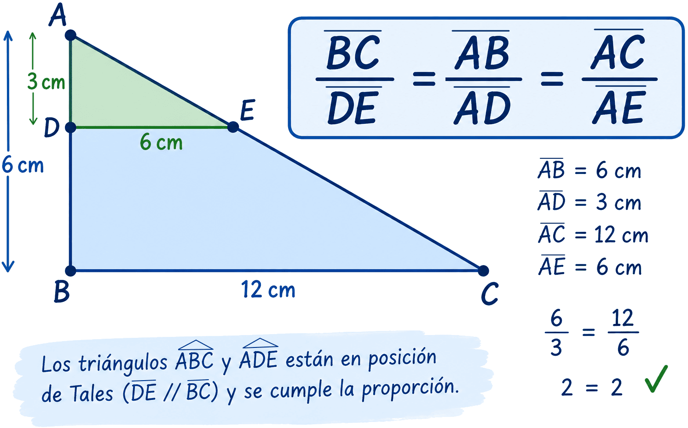
Al aparecer una recta paralela, se forman dos triángulos semejantes.
Por eso, en los triángulos en posición de Tales podemos establecer proporciones entre sus lados correspondientes.
Por ejemplo:
\(\dfrac{\text{lado del triángulo pequeño}} {\text{lado correspondiente del triángulo grande}} = \dfrac{\text{otro lado del pequeño}} {\text{otro lado del grande}}\)
¿Para qué sirve?
Principalmente para calcular longitudes que no podemos medir directamente.
Por ejemplo, podemos utilizar triángulos en posición de Tales para calcular:
- La altura de un edificio.
- La altura de un árbol.
- La anchura de un río.
- Distancias que serían difíciles de medir directamente.
Ejemplo sencillo
Imaginemos dos triángulos en posición de Tales:
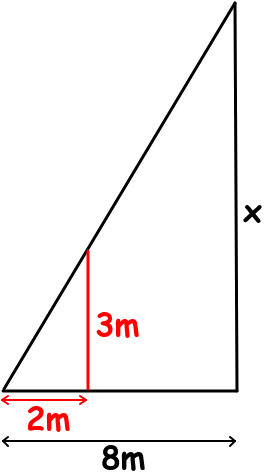
- Triángulo pequeño: altura = \(3\) m y base = \(2\) m.
- Triángulo grande: altura = \(x\) y base = \(8\) m.
Como son semejantes:
\(\dfrac{3}{x}=\dfrac{2}{8}\)
Multiplicamos en cruz:
\(3\cdot8=2x\)
\(24=2x\)
\(x=12\text{ m}\)
La altura del triángulo grande es 12 m.
🔑 Para recordar:
- SEMEJANZA: Misma forma → ángulos iguales → lados proporcionales.
- TALES: Paralelas → triángulos semejantes → proporciones.
Y una idea especialmente útil:
«Tales es una forma de encontrar medidas que no podemos medir directamente utilizando proporciones».
Criterios de semejanza de triángulos
No es necesario comprobar siempre todos los lados y todos los ángulos. Existen tres criterios que nos permiten saber si dos triángulos son semejantes.
1. Criterio AA: dos ángulos iguales
Dos triángulos son semejantes si tienen dos ángulos correspondientes iguales.
No necesitamos comprobar el tercer ángulo porque, como la suma de los ángulos de un triángulo es \(180^\circ\), automáticamente también será igual.
Ejemplo:
- Triángulo 1: \(50^\circ,\ 60^\circ,\ 70^\circ\)
- Triángulo 2: \(50^\circ,\ 60^\circ,\ 70^\circ\)
Son semejantes.
2. Criterio LLL: tres lados proporcionales
Dos triángulos son semejantes si sus tres lados correspondientes son proporcionales.
Por ejemplo:
- Lados del triángulo 1: 3, 4, 5.
- Lados del triángulo 2: 6, 8, 10.
\(\dfrac{3}{6}=\dfrac{4}{8}=\dfrac{5}{10}\)
Como todas las razones son iguales, los triángulos son semejantes.
La razón de semejanza es:
\(k=2\)
3. Criterio LAL: dos lados proporcionales y el ángulo comprendido igual
Dos triángulos son semejantes si:
- Tienen dos lados proporcionales.
- Y tienen igual el ángulo que queda entre esos dos lados.
Por ejemplo:
- Dados conocidos del triángulo 1:
- Lados: 4, 5.
- Ángulo 70º.
- Dados conocidos del triángulo 2:
- Lados: 8, 10.
- Ángulo 70º.
\(\dfrac{4}{8}=\dfrac{5}{10}\) y el ángulo comprendido entre esos lados es igual en los dos triángulos.
Por tanto, son semejantes.
🧠 Resumen:
| Criterio | ¿Qué tenemos que comprobar? |
| AA | Dos ángulos iguales |
| LLL | Tres lados proporcionales |
| LAL | Dos lados proporcionales y el ángulo comprendido igual |